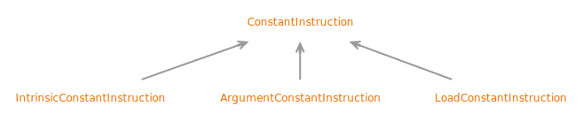

Interface ConstantInstruction
- All Superinterfaces:
ClassFileElement, CodeElement, Instruction
- All Known Subinterfaces:
ConstantInstruction.ArgumentConstantInstruction, ConstantInstruction.IntrinsicConstantInstruction, ConstantInstruction.LoadConstantInstruction
public sealed interface ConstantInstruction
extends Instruction
permits ConstantInstruction.IntrinsicConstantInstruction, ConstantInstruction.ArgumentConstantInstruction, ConstantInstruction.LoadConstantInstruction
Models a constant-load instruction in the
code array of a
Code attribute, including "intrinsic", "argument", and
"load" constant instructions.
Corresponding opcodes have a kind of Opcode.Kind.CONSTANT. Delivered as a CodeElement when traversing
the elements of a CodeModel.
The loaded constant value is symbolically represented as a ConstantDesc:
ConstantInstruction(ConstantDesc constantValue)
- Sealed Class Hierarchy Graph:
- 
- Since:
- 24
- See Also:
{kind=link}
-
Nested Class Summary
Nested ClassesModifier and TypeInterfaceDescriptionstatic interfaceModels an "argument constant" instruction, which encodes the constant value in the instruction directly.static interfaceModels an "intrinsic constant" instruction, which encodes the constant value in its opcode.static interfaceModels a "load constant" instruction, which encodes the constant value in the constant pool. -
Method Summary
Modifier and TypeMethodDescriptionReturns the constant value.ofArgument(Opcode op, int value) Returns an argument constant instruction.ofIntrinsic(Opcode op) Returns an intrinsic constant instruction.ofLoad(Opcode op, LoadableConstantEntry constant) Returns a load constant instruction.typeKind()Returns the computational type of the constant.Methods declared in interface Instruction
opcode, sizeInBytes
-
Method Details
-
constantValue
-
typeKind
TypeKind typeKind()Returns the computational type of the constant. This is derived from theconstantValue.- Returns:
- the computational type of the constant
-
ofIntrinsic
Returns an intrinsic constant instruction.- Parameters:
op- the opcode for the specific type of intrinsic constant instruction, which must be of kindOpcode.Kind.CONSTANT- Returns:
- an intrinsic constant instruction
- Throws:
IllegalArgumentException- if the opcode does not represent a constant with implicit value
-
ofArgument
Returns an argument constant instruction.valuemust be in the range ofbyte,[-128, 127], forOpcode.BIPUSH, and in the range ofshort,[-32768, 32767], forOpcode.SIPUSH.- Parameters:
op- the opcode for the specific type of argument constant instruction, which must beOpcode.BIPUSHorOpcode.SIPUSHvalue- the constant value- Returns:
- an argument constant instruction
- Throws:
IllegalArgumentException- if the opcode is notOpcode.BIPUSHorOpcode.SIPUSH, or if the constant value is out of range for the opcode
-
ofLoad
static ConstantInstruction.LoadConstantInstruction ofLoad(Opcode op, LoadableConstantEntry constant) Returns a load constant instruction.- Parameters:
op- the opcode for the specific type of load constant instruction, which must be of kindOpcode.Kind.CONSTANTconstant- the constant value- Returns:
- a load constant instruction
- Throws:
IllegalArgumentException- if the opcode is notOpcode.LDC,Opcode.LDC_W, orOpcode.LDC2_W
-